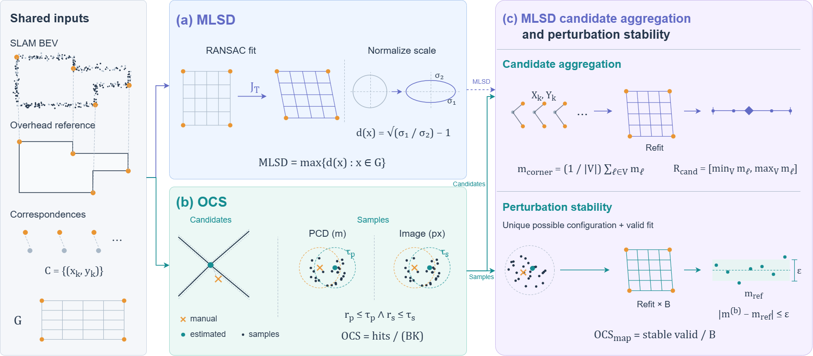
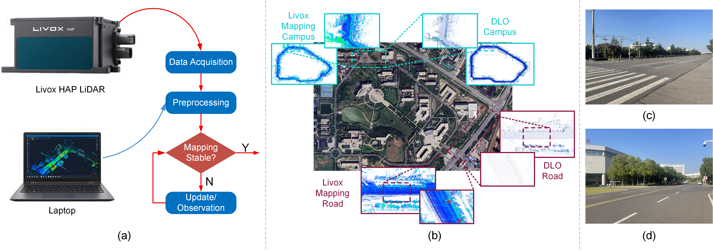

SGASD:Satellite-Guided Assessment of Structural Distortion in SLAM Point Cloud Maps
2The Intelligent Transportation System Research Center, Wuhan University of Technology
Overview
What is MLSD?
MLSD (Maximum Local Scale Deviation) is a weak-reference metric for assessing planar structural distortion in outdoor SLAM point cloud maps using satellite imagery or aerial orthophotos.
- Evaluates map structure without dense 3D ground truth, using shared roads, intersections, and building boundaries as cross-modal anchors.
- Quantifies anisotropic scaling and shear in the fitted map-to-reference transformation through its normalized Jacobian singular values.
- Describes correspondence sensitivity with an Offset Confidence Score (OCS), corner candidates, and MLSD sensitivity ranges.
Self-Collected Outdoor LiDAR Dataset
Our self-collected dataset provides two representative outdoor LiDAR sequences, Campus and Road, recorded on and around Wuhan Textile University for SLAM map evaluation.
- Portable acquisition with a handheld Livox HAP (TX) LiDAR carried by a passenger on an electric bicycle.
- Campus: 566 seconds of campus roads, turns, and surrounding buildings. Road: 271 seconds of off-campus roads with a larger mapping extent.
- Real-world evaluation with DLO and Livox Mapping reconstructions and corresponding Google Earth satellite imagery.
Method

The evaluation pipeline relates the horizontal projection of a SLAM point cloud map to an overhead reference. Correspondences between the same physical structures define a planar transformation, whose local scaling behavior provides the MLSD measurement.
- Map-to-reference alignment. Manually selected correspondences are used to fit an affine transformation or homography with RANSAC.
- Local scale analysis. At each evaluation location, the two Jacobian singular values are normalized by their geometric mean. MLSD is the maximum sampled deviation from local similarity over a fixed evaluation region.
- Correspondence sensitivity. OCS measures the agreement of sampled corner locations with manual or estimated centers. Valid corner candidate combinations yield an MLSD mean and range; a unique configuration also supports perturbation-based stability analysis.
Dataset
The self-collected sequences capture two outdoor mapping environments: an internal campus road with regular layouts and surrounding buildings, and an off-campus road with a larger coverage area. Both scenes contain structures visible in the LiDAR maps and satellite reference images.
During acquisition, a passenger on the rear seat of an electric bicycle held the Livox HAP (TX) sensor while traveling at approximately 20 km/h. Its 120° × 25° field of view produces limited observations of the surroundings. We reconstruct maps with DLO and Livox Mapping to examine the resulting local and accumulated geometry.

Results
We evaluate MLSD on Backpack2025 Seq.2 and the self-collected Campus and Road sequences. Alignment overlays show the relationship between each reconstructed map and its satellite reference. The accompanying fields visualize the local anisotropy implied by the fitted map-to-reference transformation.
Backpack2025 Seq.2
Campus
Road


Overlay
Overlay
Overlay


Local anisotropy
Local anisotropy
Local anisotropy
Quantitative Results
We report MLSD alongside available trajectory and point-cloud evaluation metrics. APE and RPE describe trajectory error, while CD, AWD, and SCS measure geometric discrepancy or spatial consistency. MLSD summarizes non-similarity in the fitted planar alignment. In the table, "--" denotes metrics that are unavailable or inapplicable under the reference configuration: DLO Seq. 2 provides ground-truth poses but no ground-truth point cloud, allowing APE and RPE to be computed, whereas CD, AWD, and SCS remain unavailable.
The resulting coefficients of variation are 6.97%, 8.16%, and 8.40% for Backpack2025 Seq.2, Campus, and Road, respectively.
| Metric ↓ | DLO | Livox Mapping | |||
|---|---|---|---|---|---|
| Seq. 2 | Campus | Road | Campus | Road | |
| APE | 3.20 | – | – | 19.94 | 180.91 |
| RPE | 0.05 | – | – | 0.14 | 0.37 |
| CD | – | – | – | 44.18 | 113.92 |
| AWD | – | – | – | 0.56 | 1.03 |
| SCS | – | – | – | 0.47 | 0.45 |
| MLSD (OURS) | 0.026 | 0.014 | 0.028 | 0.083 | 0.018 |